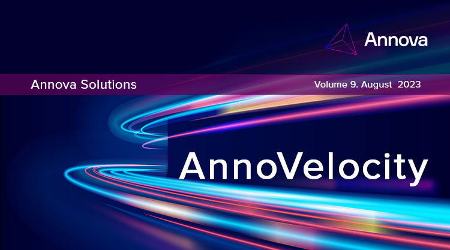

|

Innovative Use Cases in LLM and ChatGPT.
"A Large Language Model, as you know, is a form of machine learning model capable of performing various natural language processing (NLP) tasks, including text generation, text classification, conversational question answering, and language translation. |
|
LLMs. Going far beyond Chatbots.
"Do LLMs stop at powering advanced chatbots and virtual assistants that engage in natural and meaningful conversations with users. |
|
Meet Chinchilla.
Chinchilla is a family of Large Language Models developed by DeepMind which is now a Google company. |
|
Be My Eyes and ChatGPT. Giving the visually impaired new eyes
Be My Eyes uses ChatGPT's visual processing activities to power its AI visual assistant, providing instant interpretation and conversational assistance for blind or low-vision users. The results are real eye - openers |
|
Milo. AI is family.
Milo's founder, Avni Patel Thompson almost shut down the company before reaching out to Sam Altman. |
|
Tailpiece 
This is from Forbes. A popular narrative these days is that ChatGPT and conversational LLMs like it are on the verge of replacing Google Search as the world's go-to source for information, disrupting the once-mighty tech giant like Blockbuster or Kodak were disrupted before it. |
|
Know more about Annova solutions Click here
|